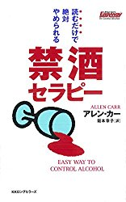
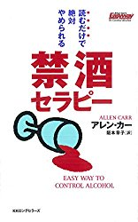

ちょっと大きめの書店なら在庫があると思います。定価は905円+税です。近所の古本屋で安く手に入るかもしれません。
禁酒はこの本を読み終えてから始めることをおすすめします。この本はお酒の正体を暴いてくれます。
例えばあなたの友人が、ある女性に夢中になったとしましょう。ところがその女性、何人もの男性に貢がせ続けて破産させる性悪女だったとします。
それに気づいたあなたは友人に忠告します。
「彼女は性悪女だ。お前は利用されているだけだ。」
「お前も他の男達と同じように捨てられるぞ」
あなたの忠告が全て真実だったとしても、友人はそれを素直に聞き入れて彼女と別れる決心をするでしょうか？
「そんなはずはない。僕は彼女のことをよく知っている」
「女に騙されるほど僕はバカじゃない！」
などと否定されるのがオチでしょう。
お気づきかも知れませんが、「性悪女」がお酒、「友人」があなたの状況です。あなたはお酒についてよく知っている「つもり」なのです。
お酒の害・デメリットについては、今まで散々見聞きしてきたことでしょう。ですがこれらの情報は、今まであなたにお酒をやめさせることができませんでした。
では、例の友人が「彼女の正体は、女装した男性だった」と気づいたら？
彼女（彼）への熱意は一気に冷めて、二度と会おうとしないでしょう。
同じようにお酒・アルコールの正体を知れば、努力せずとも自然と辞めたくなるはずです。そんな知識を与えてくれる、おすすめの書籍を紹介します。
禁酒セラピー（著アレン・カー）

ちょっと大きめの書店なら在庫があると思います。定価は905円+税です。近所の古本屋で安く手に入るかもしれません。
禁酒はこの本を読み終えてから始めることをおすすめします。この本はお酒の正体を暴いてくれます。